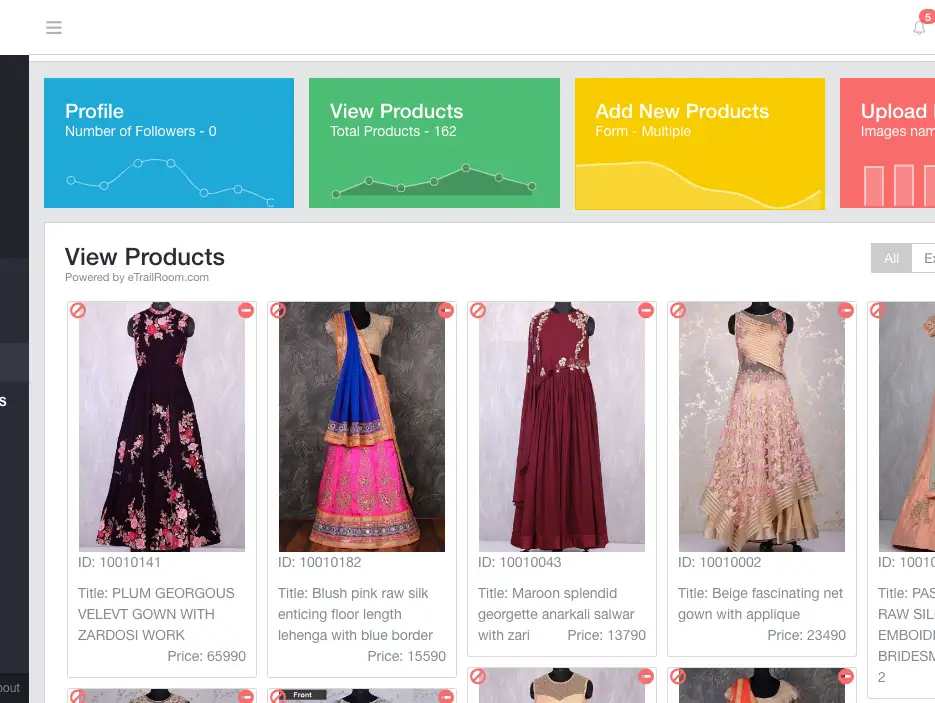

<div id="project">
	<section class="content">
		<div class="block-content">			
			<div class="project-title">
				<h4>Sopnop</h4>
				<p>Enterprise Web / Mobile App</p>
			</div>
			<p class="project-description">
				Sopnop.com is where you can Discover & Shop the latest in Fashion items Handpicked for you across stores and Share what you love with others. Selective, classy and elegant pieces from your favorite stores! For the Fashion Social Shopping You Don't yet know, Come experience Sopnop and fall in Love!
				<br/> Also had Sopnop Inventory Management is a Platform where the businesses can integrate and showcase themselves with the Sopnop platform by uploading their products, getting a catch of how many followers they have as well as by interacting with the audience and thus being able to understand the latest style trends and knowing about their value.
				<br/> As a Founder and Primary Software Engineer, I was responsible for developing and maintaining both the Sopnop.com consumer platform and the Sopnop Inventory Management system. These platforms enabled end consumers to discover, shop, and share fashion items, while also allowing businesses to manage their inventory and engage with their audience effectively.
			</p>
			<div class="project-media">
				
				
				
			</div>        
		</div>
	</section>
 </div>

